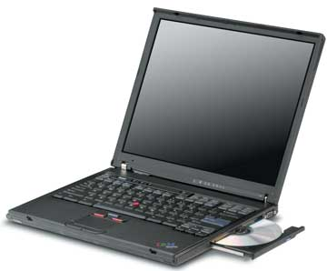
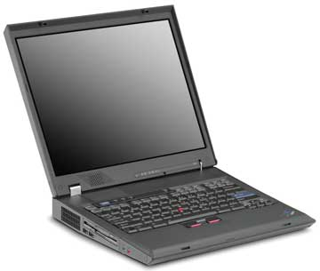
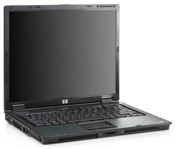
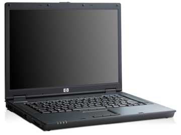
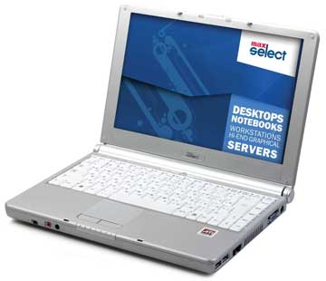

Мы продолжаем начатый в "BYTE/Россия" № 10'2005 обзор мобильных ПК, представленных на российском рынке в первой половине 2005 г. - с января по август включительно. Компании и их продукция расположены в алфавитном порядке, баз учета объемов продаж, занимаемых долей рынка и прочих экономических показателей. По мере возможностей мы старались рассмотреть практически все объявленные модели, за исключением тех, которые явным образом нацелены на домашних пользователей.
Модели IBM
Первая модель в обзоре - ThinkPad T43, компактный и высокопроизводительный ноутбук, предназначенный для пользователей, периодически мигрирующих между несколькими рабочими местами и желающих всегда иметь при себе полноценный рабочий инструмент типа "все в одном".
|  | Ноутбук IBM ThinkPad T43.
|
Компьютеры этой серии поставляются с процессорами Pentium M моделей 730-770, работающими на частотах от 1,6 до 2,13 ГГц. Базой для них выступает набор микросхем Intel 915GM Express. Максимальный объем ОЗУ стандарта PC4200 DDR2 можно довести до 2 Гбайт. Графическая подсистема ноутбука либо использует встроенный в НМС контроллер Intel Graphic Media Accelerator 900, либо базируется на микросхеме ATI Mobility Radeon X300 с 64 Мбайт видеопамяти.
Аппараты серии ThinkPad T43 оснащаются дисплеями с диагональю экрана как 14,1, так и 15 дюймов. И в том, и в другом случае это может быть SXGA+ либо XGA-дисплей (с разрешением 1400х1050 и 1024х768 соответственно).
Дисковая подсистема включает один из трех оптических приводов: комбинированный DVD/CD-RW привод, восьмискоростной DVD-накопитель, универсальный DVD±RW дисковод, - и какой-либо из следующих жестких дисков: 30-Гбайт со скоростью вращения 4200 об./мин, 40-, 60-, 80- или 100-Гбайт со скоростью вращения 5400 об./мин, 60-Гбайт со скоростью вращения 7200 об./мин.
Телекоммуникационные возможности представлены встроенным модемом стандарта V.90, интегрированным гигабитным сетевым Ethernet-адаптером, встроенным беспроводным интерфейсом Intel PRO/Wireless 2200BG или PRO/Wireless 2915ABG, ИК-портом, а в некоторых моделях еще и интерфейсом Bluetooth.
Для подключения дополнительного оборудования ThinkPad T43 снабжен интерфейсами, совместимыми с картами стандартов CardBus типа II и ExpressCard/34 или ExpressCard/54, параллельным портом, видеовыходом S-video и двумя разъемами USB 2.0. Имеется также разъем для подключения док-станции или репликатора портов.
Стандартный шестиячеистый аккумулятор обеспечивает пользователям до 4 ч непрерывной работы, в зависимости от комплектации ноутбука.
Устройства серии ThinkPad T43 имеют следующие массогабаритные характеристики: 15-дюйм модели - 329х268х31-36 мм и 2,4/2,6 кг; 14,1-дюйм модели - 311х255х26,3 мм и 2,1/2,3 кг.
Модели серии ThinkPad T43p относятся к разряду портативных рабочих станций и разработаны с учетом потребностей пользователей в мощных профессиональных средствах для работы с 3D-графикой.
Ноутбуки построены на базе НМС Intel 915PM Express и одного из следующих процессоров: 2,13-ГГц Pentium M 770, 2-ГГц Pentium M 760 или 1,86-ГГц Pentium M 750. Оперативная память стандарта PC4200 DDR2 ограничена максимумом в 2 Гбайт. Графический адаптер ATI Mobility FireGL V3200 обеспечивает самый высокий уровень производительности и качества при обработке графической информации.
Устройства серии ThinkPad T43p оснащены либо 15-дюйм UXGA-дисплеем с разрешением 1600х1200, либо 14,1-дюйм SXGA+ с разрешением 1400х1050.
Дисковая подсистема состоит из оптического привода - универсального DVD±RW или комбинированного DVD/CD-RW, и жесткого диска - емкостью 60 Гбайт со скоростью вращения 7200 об./мин или 80 Гбайт со скоростью вращения 5400 об./мин в зависимости от конкретной модели.
Все модели серии ThinkPad T43p оснащены ИК-портом, модемом стандарта V.90, гигабитным Ethernet-адаптером, беспроводным интерфейсом ThinkPad 11 a/b/g II, Intel PRO/Wireless 2915ABG или Intel PRO/Wireless 2200BG (в зависимости от конкретного устройства), а в некоторых моделях интерфейсом Bluetooth.
Для работы с дополнительным периферийным оборудованием в специальные гнезда устанавливаются платы расширения PC Card типа II или ExpressCard/54; имеются также два разъема USB 2.0, параллельный порт и видеовыход S-video. Предусмотрен и разъем для подключения док-станции или репликатора портов.
Устройства серии ThinkPad T43p с экраном 14,1 дюйм работают от стандартного шестиячеистого аккумулятора до 5,2 ч, а 15-дюйм модели - до 4,8 ч от девятиячеистой батареи.
Габариты 15-дюйм модели - 329х268х31-36 мм, 14,1-дюйм модели - 311х255х26 мм; дорожная масса равна соответственно 2,6/2,8 кг и 2,3/2,5 кг.
Модель ThinkPad X32 представляет собой сверхкомпактный аппарат на базе платформы Centrino, предназначенный для пользователей, большую часть рабочего времени проводящих в разъездах.
Ноутбук построен с использованием НМС Intel 855PM и одного из следующих процессоров: Pentium M 755 с тактовой частотой 2 ГГц, Pentium M 745 с частотой 1,80 ГГц, Pentium M 735 (1,70 ГГц ) или Pentium M 725 (1,60 ГГц). В стандартной поставке ноутбуки оснащаются оперативной памятью стандарта PC2700 DDR объемом 256 или 512 Мбайт, расширяемой до 2 Гбайт. Графический адаптер построен на базе микросхемы ATI Mobility Radeon и 16 Мбайт видеопамяти.
Ноутбук оснащен 12,1-дюйм XGA-дисплеем с разрешением 1024x768.
Дисковая подсистема ThinkPad X32 включает в себя 40-, 60- или 80-Гбайт жесткий диск со скоростью вращения 4200 либо 5400 об./мин. Оптический накопитель выполнен как внешнее устройство, подключаемое через USB-интерфейс, и в комплект поставки не входит.
Телекоммуникационная подсистема представлена встроенным модемом стандарта V.90, гигабитным Ethernet-адаптером. Кроме того, часть устройств оснащена одним из беспроводных интерфейсов: ThinkPad 11b/g, ThinkPad 11a/b/g, ThinkPad 11b/g II, ThinkPad 11a/b/g II, Intel PRO/Wireless 2200BG или Intel PRO/Wireless 2915ABG. В некоторых моделях установлен модуль Bluetooth.
Для работы с периферией ThinkPad X32 снабжен гнездом PC Card типа II, двумя разъемами USB 2.0, разъемом IEEE 1394 и параллельным портом. Кроме того, есть возможность подключения док-станции или репликатора портов через специальный разъем.
В зависимости от используемого процессора продолжительность работы ThinkPad X32 от батареи может достигать 5,7 ч.
Габариты устройства составляют 273х223х25-30 мм, его масса - 1,64 кг.
Серия ThinkPad X41, как и предыдущая, относится к категории сверхкомпактных и предназначена для много путешествующих пользователей.
Сердцем моделей этой серии стал 1,50-ГГц процессор Intel Pentium M 758 с пониженным энергопотреблением, а базой - НМС Intel 915GM. Типовые модели серии оснащаются оперативной памятью стандарта DDR2 PC4200 объемом 256 или 512 Мбайт, при этом общий объем ОЗУ можно расширить до 1,5 Гбайт. Графическая подсистема ноутбука основана на встроенном в НМС контроллере Intel GMA 900.
Устройства ThinkPad X41 оснащены 12,1-дюйм XGA-дисплеем с разрешением 1024x768.
Дисковая подсистема ThinkPad X41 ограничивается жестким диском со скоростью вращения 4200 об./мин емкостью 20, 30, 40 или 60 Гбайт. Оптический накопитель в комплект поставки не входит и может быть выполнен в виде внешнего устройства, подключаемого через USB-интерфейс, либо в виде привода, устанавливаемого в док-станцию ThinkPad X4 UltraBase Dock.
Телекоммуникационная подсистема представлена встроенным модемом стандарта V.90 и гигабитным Ethernet-адаптером. Часть устройств, в зависимости от модели, оснащена одним из следующих беспроводных интерфейсов: ThinkPad 11b/g, ThinkPad 11a/b/g, ThinkPad 11b/g II, ThinkPad 11a/b/g II, Intel PRO/Wireless 2200BG или Intel PRO/Wireless 2915ABG. В некоторых аппаратах установлен также модуль Bluetooth.
Для работы с периферией ThinkPad X41 снабжен гнездом PC Card типа II, гнездом типа Secure Digital Card для установки карт расширения и карт флэш-памяти, и двумя разъемами USB 2.0. Кроме того, при помощи специального разъема можно подключить док-станцию ThinkPad X4 UltraBase Dock.
Продолжительность автономной работы ThinkPad X41 от четырехячеистой батареи составляет 2,5 ч, в случае восьмиячеистой батареи - 5,7 ч.
Габариты устройства составляют 268х211х21-27 мм с четырехэлементной батареей и 268х237х21-27 мм с восьмиэлементной батареей. Масса - 1,24 кг в первом случае и 1,45 кг во втором.
Модель ThinkPad R50e представляет собой недорогой корпоративный ноутбук, тонкий и легкий, и вместе с тем достаточно мощный для того, чтобы заменить собой настольный ПК.
Компьютеры этой серии поставляются как с 2,0-ГГц процессорами Pentium M 755, так и с 1,4-ГГц Celeron M 360. Основой серии выступает НМС Intel 855GM. Максимальный объем ОЗУ стандарта PC2700 DDR можно довести до 2 Гбайт. Графическая подсистема ноутбука основана на встроенном в НМС контроллере Intel Extreme Graphics 2.
Аппараты серии оснащаются 14,1-дюйм или 15-дюйм XGA-дисплеями с разрешением 1024х768.
Дисковая подсистема включает восьмискоростной DVD-накопитель и какой-либо из жестких дисков емкостью 30, 40, 60 или 80 Гбайт.
Телекоммуникационные возможности ThinkPad R50e представлены встроенным модемом стандарта V.90, интегрированным сетевым Ethernet-адаптером со скоростью 10/100 Мбит/с, а в некоторых моделях еще и встроенным беспроводным интерфейсом ThinkPad 11 b/g, Intel PRO/Wireless 2100BG или Intel PRO/Wireless 2200BG.
Для подключения периферии служат гнездо PC Card типа III, два разъема USB 2.0 и параллельный порт.
Стандартная шестиячеистая аккумуляторная батарея обеспечивает ноутбуку до 4 ч непрерывной работы, девятиячеистая - до 6 ч.
Габариты 14,1-дюйм моделей составляют 314х260х34 мм, 15-дюйм моделей - 332х268,4х37 мм. Дорожная масса - от 2,6 кг.
Серия ThinkPad R51 представляет собой развитие идей, заложенных в ThinkPad R50e, направленное на повышение функциональности и удобства пользования при небольшом увеличении стоимости. Целевая аудитория этой серии - та же самая.
Компьютеры этой серии построены на базе НМС Intel 855GM и поставляются с 2,0-ГГц процессором Pentium M 755 или 1,4-ГГц Celeron M 360. В стандартный комплект поставки входит 256 или 512 Мбайт оперативной памяти стандарта PC2700 DDR, максимальный ее объем можно довести до 2 Гбайт. Графическая подсистема базируется либо на микросхеме ATI Mobility Radeon 7500, либо на кристалле ATI Mobility Radeon 9000 и 32 Мбайт выделенной видеопамяти.
Устройства серии ThinkPad R51 оснащаются 14,1-дюйм или 15-дюйм XGA-дисплеями с разрешением 1024х768.
Дисковая подсистема включает один из следующих оптических приводов на выбор: универсальный DVD-RW, комбинированный DVD/CD-RW, восьмискоростной DVD или 24-скоростной CD-ROM, и один жесткий диск емкостью 20, 30, 40, 60 или 80 Гбайт.
Телекоммуникационная подсистема ThinkPad R51 состоит из встроенного модема стандарта V.90, ИК-порта, интегрированного сетевого Ethernet-адаптера со скоростью 10/100 Мбит/с или 10/100/1000 Мбит/с, а также беспроводного интерфейса ThinkPad 11 a/b/g, Intel PRO/Wireless 2100BG или Intel PRO/Wireless 2200BG в зависимости от модели. В некоторых устройствах предустановлен интерфейс Bluetooth.
Периферийное оборудование можно подключать с помощью гнезда PC Card типа III, видеовыхода S-video, двух разъемов USB 2.0, параллельного порта и порта IEEE 1394 (в некоторых моделях). Предусмотрен и разъем для подключения док-станции или расширителя портов.
Стандартный аккумулятор обеспечивает ноутбуку до 4,7 ч непрерывной работы, батарея повышенной емкости - до 6,9 ч.
Габариты ThinkPad R51 - 332х269х37-40 мм, масса - до 3,2 кг.
Серия ThinkPad R52 - это последовательный шаг в развитии линейки, вызванный модернизацией платформы Intel Centrino и переходом к поколению Sonoma. Устройства претерпели компонентное обновление и стали дороже, однако круг потенциальных заказчиков остался тот же - сотрудники корпораций, нуждающиеся в относительно недорогой, но производительной и полнофункциональной замене настольного ПК.
Ноутбуки построены на базе НМС Intel 915GM Express и оснащены либо 2,13-ГГц процессором Pentium M 770, либо 1,5-ГГц Celeron M 370. В стандартный комплект поставки устройств входит 256 или 512 Мбайт ОЗУ стандарта PC2-4200 DDR2, увеличить его можно максимум до 2 Гбайт. Графическая подсистема построена на микросхеме ATI Mobility Radeon 7500 либо ATI Mobility Radeon 9000 и 32 Мбайт выделенной видеопамяти.
Серия ThinkPad R52 оснащается 15-дюйм дисплеями SXGA+ с разрешением 1400х1050 либо 14,1-дюйм или 15-дюйм XGA-экранами с разрешением 1024х768.
Дисковая подсистема состоит из оптического привода на выбор: универсальный DVD-RW, комбинированный DVD/CD-RW, восьмискоростной DVD или 24-скоростной CD-ROM, и жесткого диска емкостью 20, 30, 40, 60 или 80 Гбайт.
Телекоммуникационная подсистема ThinkPad R52 состоит из встроенного модема стандарта V.90, ИК-порта, интегрированного сетевого Ethernet-адаптера со скоростью 10/100 Мбит/с или 10/100/1000 Мбит/с, а также беспроводного интерфейса ThinkPad 11a/b/g, Intel PRO/Wireless 2100BG или Intel PRO/Wireless 2200BG в зависимости от модели. В некоторых устройствах предустановлен интерфейс Bluetooth.
Периферийное оборудование подключается с помощью гнезд PC Card и ExpressCard/54 типа II, видеовыхода S-video, двух разъемов USB 2.0, параллельного порта и порта IEEE 1394 (в некоторых моделях). Предусмотрен разъем для подключения док-станции или расширителя портов.
Стандартная батарея дает до 4,7 ч непрерывной работы, батарея повышенной емкости - до 6,6 ч.
Размеры ThinkPad R52 составляют 332х269х37-40 мм, масса достигает 3,2 кг.
Серия ThinkPad G41 - полноценная замена настольного компьютера, предоставляющая всю мощь и достижения технологий в небольшом корпусе тем, кому нужны компактность и удобство, но не слишком важны масса и время автономной работы.
|  | Ноутбук серии IBM ThinkPad G41.
|
В модели ThinkPad G41 устанавливается один из следующих процессоров: 3,33-ГГц Pentium 4 548, 3,20-ГГц Pentium 4 538, 3,06-ГГц Pentium 4 532, 2,53-ГГц Celeron D 330 или 2,66-ГГц Celeron D 325. В качестве базы используется НМС Intel 865G. В стандартной поставке устройства оснащены 128, 256 или 512 Мбайт оперативной памяти PC2700 DDR, расширяемой до 2 Гбайт. Графическая подсистема построена либо на базе интегрированного ядра Intel Extreme Graphics 2, либо на базе микросхемы NVIDIA GeForce FX Go5200.
Устройства серии ThinkPad G41 оснащаются 14,1- или 15-дюйм XGA-дисплеями с разрешением 1024х768 либо 15-дюйм SXGA+ с разрешением 1400x1050.
Дисковая подсистема включает оптический привод на выбор: универсальный DVD-RW, комбинированный DVD/CD-RW, восьмискоростной DVD или 24-скоростной CD-ROM, - и один из следующих жестких дисков: емкостью 30 или 40 Гбайт со скоростью вращения 4200 об./мин; емкостью 40 или 80 Гбайт со скоростью вращения 5400 об./мин; емкостью 60 Гбайт со скоростью вращения 7200 об./мин. В некоторых моделях предустановлен привод для 3,5-дюйм дискет.
Телекоммуникационная подсистема ThinkPad G41 состоит из встроенного модема стандарта V.90, гигабитного сетевого Ethernet-адаптера, а в некоторых устройствах еще и беспроводного интерфейса ThinkPad 11b/g или ThinkPad 11a/b/g II.
Четыре разъема USB 2.0, параллельный порт и гнездо для карт PC Card типа II позволяют подключить разнообразную периферию. Для удобства пользования ThinkPad G41 имеет разъем PS/2, через который можно подсоединить внешнюю клавиатуру или мышь.
Продолжительность работы ThinkPad G41 от батареи достигает 2 ч в случае шестиэлементной батареи и 4 ч при 12-ячеистой батарее.
Ноутбуки этой серии имеют массу 3,74 кг в исполнении с 14-дюйм дисплеем и 3,87 кг в исполнении с 15-дюйм дисплеем при габаритах 329х280х37-51 мм.
Ноутбуки HP
Модель nc6120 представляет собой тонкий и легкий ноутбук с оптимальным балансом мобильности, коммуникационных возможностей, продолжительной работы от батареи и умеренной цены, предназначенный для мобильных профессионалов.
|  | Ноутбук HP nc6120.
|
Линейка создана на базе набора микросхем Intel 915GM Express (модели, в которых используется процессор Pentium M) или Intel 910GML Express (для моделей с процессором Celeron M). В зависимости от комплектации ноутбук может содержать процессор Pentium M 730, 740, 750, 760 и 770 с тактовой частотой от 1,6 до 2,13 ГГц либо Celeron M 350, 360 или 370 с тактовой частотой от 1,3 до 1,5 ГГц. Оперативная память ноутбука расширяется с минимальных 256 Мбайт до максимальных 2 Гбайт двумя модулями SO-DIMM стандарта PC2700 DDR. В качестве графического адаптера используется встроенный в НМС видеоконтроллер Intel Graphic Media Accelerator 900.
Ноутбуки оснащаются 14,1-дюйм или 15-дюйм XGA-дисплеями с разрешением 1024х768 либо 15-дюйм дисплеем SXGA+ с разрешением 1400х1050.
Дисковая подсистема ноутбука включает оптический привод: либо DVD-ROM, либо комбинированный DVD/CD-RW, либо DVD±RW, и жесткий диск емкостью 40, 60 или 80 Гбайт со скоростью вращения 5400 об./мин.
Для связи с внешним миром могут использоваться встроенный модем стандарта V.90, гигабитный сетевой адаптер NetXtreme Gigabit, ИК-порт, а также встроенный беспроводной интерфейс Intel Pro/Wireless 2200BG, Intel Pro/Wireless 2915ABG, Broadcom 802.11g или Broadcom 802.11a/g, в зависимости от модели, и опциональный интерфейс Bluetooth, установленный в некоторых устройствах.
Для подключения периферийных устройств модель nc6120 имеет четыре разъема USB 2.0, порт IEEE 1394, параллельный и последовательный порты, а также гнездо для карт PC Card типа III и слот для карт флэш-памяти "6 в 1". Предусмотрен разъем для подключения док-станции.
Стандартная батарея дает до 4,7 ч непрерывной работы, батарея повышенной емкости - до 6,6 ч.
Размеры nc6120 составляют 328,6х267х30,3 мм, масса в 14-дюйм исполнении достигает 2,6 кг, в 15-дюйм исполнении - 2,7 кг.
Серия nc6220 - это ультрапортативные ноутбуки в тонком, легком и стильном корпусе, предоставляющие в распоряжение профессионалов, часто находящихся в разъездах, мощные возможности мобильных вычислений с расширенными функциями безопасности и повышенной надежностью.
Устройства nc6220 созданы на базе НМС Intel 915GM Express и процессора Pentium M моделей 730, 740, 750, 760 и 770 с тактовыми частотами от 1,6 до 2,13 ГГц. Оперативная память ноутбука расширяется со стандартных 256, 512 или 1024 Мбайт до 2 Гбайт двумя модулями SO-DIMM стандарта PC4200 DDR2. В качестве графического адаптера используется встроенный в НМС видеоконтроллер Intel Graphic Media Accelerator 900.
Мобильные ПК оснащаются 14,1-дюйм XGA-дисплеями с разрешением 1024х768.
Дисковая подсистема ноутбука включает устанавливаемые в отсек multi bay оптический привод DVD-ROM, либо комбинированный привод DVD/CD-RW, либо накопитель DVD±RW, и жесткий диск 40, 60 или 80 Гбайт со скоростью вращения 5400 об./мин или же емкостью 60 Гбайт со скоростью вращения 7200 об./мин.
Телекоммуникационная подсистема включает встроенный модем стандарта V.90, гигабитный сетевой адаптер NetXtreme Gigabit, ИК-порт, а также встроенный беспроводной интерфейс Intel PRO/Wireless 2200BG, Intel PRO/Wireless 2915ABG, Broadcom 802.11g или Broadcom 802.11a/g, в зависимости от модели, и опциональный интерфейс Bluetooth в некоторых устройствах.
Для подключения периферийных устройств модель nc6220 имеет три разъема USB 2.0, видеовыход S-video, последовательный порт, а также гнездо для карт PC Card II и гнездо типа Secure Digital Card для установки карт расширения и флэш-памяти. Предусмотрен и разъем для подключения док-станции и считыватель смарт-карт.
Стандартная шестиэлементная батарея обеспечивает ноутбуку до 4,5 ч непрерывной работы.
Устройства серии nc6220 имеют габариты 315х257х26,5 мм и массу 2,26 кг (с установленным оптическим приводом).
Модель nw8240 относится к разряду мобильных графических станций с расширенными возможностями обработки графики и широким экраном.
|  | Ноутбук серии HP nw8240.
|
Основа ноутбука - процессор Intel Pentium M 760 или 770 с тактовой частотой 2 и 2,13 ГГц соответственно, НМС Intel 915PM Express и оперативная память стандарта PC4200 DDR2, расширяемая до 2 Гбайт с помощью двух SO-DIMM разъемов. Видеоподсистема построена на базе микросхемы ATI Mobility FireGL V5000 и 128 Мбайт видеопамяти.
Устройства серии nw8240 оснащаются широкоформатными 15,4-дюйм дисплеями WSXGA+ с разрешением 1680х1050 или широкоформатными 15,4-дюйм WUXGA-дисплеями с разрешением 1920х1200.
Дисковую подсистему ноутбука составляют устанавливаемый в отсек multi bay оптический привод (универсальный DVD±RW или комбинированный DVD/CD-RW на выбор) и 60-Гбайт жесткий диск со скоростью вращения 7200 об./мин либо 80-Гбайт со скоростью вращения 5400 об./мин.
Телекоммуникационные возможности nw8240 реализованы посредством встроенного модема стандарта V.90, ИК-порта, гигабитного Ethernet-адаптера NetXtreme Gigabit, беспроводного адаптера Intel PRO/Wireless 2200BG, Intel PRO/Wireless 2915ABG, Broadcom 802.11b/g или Broadcom 802.11a/b/g и интерфейса Bluetooth (в некоторых моделях).
Периферийные интерфейсы представлены тремя портами USB 2.0, видеовыходом S-video, разъемом IEEE 1394, последовательным портом и гнездом для карт PC Card типа II. Кроме того, имеется гнездо для установки карт расширения и карт флэш-памяти стандарта Secure Digital. Предусмотрен и специальный разъем для подключения док-станции, а также считыватель смарт-карт.
Время автономной работы ноутбуков этой серии от штатного аккумулятора составляет примерно 4 ч, дополнительная батарея повышенной емкости позволяет довести его до 8 ч.
Габариты модели nw8240 - 356х64х28 мм, масса с установленным оптическим приводом составляет 2,8 кг, а с заглушкой вместо него - 2,6 кг.
Серия nx6110 - ноутбуки с оптимальным для офисных задач сочетанием производительности и времени работы от батарей, позиционируемые в классе недорогих массово доступных решений.
Компьютеры этой серии поставляются с процессорами Pentium M моделей 730, 740, 750, 760 и 770 с тактовыми частотами от 1,6 до 2,13 ГГц или с процессорами Celeron M моделей 350, 360, 370 с тактовыми частотами от 1,3 до 1,5 ГГц. В качестве компонентной базы выступает НМС Intel 915GM Express: максимальный объем ОЗУ стандарта PC4200 DDR2 составляет 2 Гбайт. Графическая подсистема ноутбука функционирует на базе встроенного в НМС контроллера Intel Graphic Media Accelerator 900.
Ноутбуки серии nx6110 оснащаются 15-дюйм XGA-дисплеем с разрешением 1024х768.
Дисковая подсистема включает один из трех оптических приводов: комбинированный привод DVD/CD-RW, DVD-ROM-накопитель, универсальный дисковод DVD±RW - и один из жестких дисков: либо емкостью 40 Гбайт со скоростью вращения 4200 об./мин, либо 60 Гбайт со скоростью вращения 5400 об./мин.
Телекоммуникационная подсистема серии nx6110 включает встроенный модем стандарта V.90, сетевой 10/100 Мбит/с Ethernet-адаптер NetXtreme, беспроводной интерфейс Intel PRO/Wireless 2200BG или Broadcom 802.11g, ИК-порт, а в некоторых моделях - интерфейс Bluetooth.
Для подключения периферийного оборудования ноутбук снабжен интерфейсом PC Card типа II, совместимым с картами стандарта CardBus, портом IEEE 1394a и двумя разъемами USB 2.0.
Ресурс стандартной батареи составляет около 4,5 ч непрерывной работы, опциональная батарея повышенной емкости позволяет удвоить этот результат.
Устройства серии nx6110 имеют следующие массогабаритные характеристики - размер 328,6х267х30,3 мм, дорожная масса 2,7 кг.
Серия nx6125 относится к разряду портативных систем, претендующих на роль основного компьютера делового человека. Мощный мобильный ПК с достаточно большой продолжительностью автономной работы неплохо подойдет на роль замены настольной системы для тех, кто хочет иметь единое интегрированное решение для работы в любом месте, в любых условиях и при любых обстоятельствах.
Модели серии nx6125 построены на базе набора микросхем ATI Radeon Express 200М. В ноутбуках устанавливается один из следующих процессоров: AMD Turion 64 ML-28, ML-30, ML-32, ML-34, ML-37 или ML-40 с тактовыми частотами от 1,6 до 2,2 ГГц либо Mobile AMD Sempron 2800+, 3000+ или 3100+ с тактовыми частотами от 1,6 до 1,8 ГГц. Объем оперативной памяти стандарта PC2700 DDR в типовых моделях составляет 256, 512 или 1204 Мбайт, а максимум ограничен 2 Гбайт. Графическая подсистема базируется на микросхеме ATI Mobility Radeon X300.
Устройства оснащаются либо 15-дюйм XGA-дисплеем с разрешением 1024х768, либо широкоугольным 15-дюйм дисплеем SXGA+ с разрешением 1400х1050.
Дисковая подсистема ноутбука включает оптический привод на выбор: универсальный DVD±RW с поддержкой двухслойных носителей и технологии гравировки тыльной стороны дисков LightScribe, обычный универсальный DVD±RW, комбинированный DVD/CD-RW, DVD-ROM либо CD-ROM. В зависимости от конкретной модели устройства оснащаются одним из следующих жестких дисков: емкостью 40, 60 или 80 Гбайт со скоростью вращения 4200 или 5400 об./мин.
Ноутбуки серии nx6125 оснащены модемом стандарта V.90, гигабитным сетевым адаптером NetXtreme Gigabit Ethernet и беспроводным интерфейсом Broadcom 802.11а/b/g или Broadcom 802.11b/g, в зависимости от конкретного устройства. В некоторых моделях присутствует опциональный интерфейс Bluetooth.
Для работы с дополнительным периферийным оборудованием в специальные гнезда устанавливаются платы расширения PC Card типа II и ExpressCard/54; имеются также три разъема USB 2.0, порта IEEE 1394 и видеовыхода S-video. Предусмотрен и разъем для подключения док-станции. Ноутбуки также оборудованы считывателем смарт-карт и слотом для карт флэш-памяти "6 в 1".
Стандартный шестисекционный аккумулятор обеспечивает до 3,5 ч автономии. Существует и более емкая восьмиячеистая батарея, позволяющая несколько увеличить этот показатель.
Габариты ноутбуков серии nx6125 составляют 328х267х31 мм, полная дорожная масса - 2,72 кг.
Серия nx8220 позиционируется как мощное компактное устройство для мобильных пользователей, часто и помногу перемещающихся в деловых поездках.
В качестве основы ноутбуков используется платформа на базе НМС Intel 915PM Express и один из следующих процессоров Pentium M: модель 730, 740, 750, 760 или 770 с тактовыми частотами от 1,6 до 2,13 ГГц. Оперативная память стандарта PC4200 DDR2 расширяется посредством двух слотов SO-DIMM до максимума в 2 Гбайт. В качестве графического адаптера используется внешний модуль PCI Express, построенный на базе микросхемы ATI Mobility Radeon X600 со 128 Мбайт независимой видеопамяти.
Устройства серии nx8220 оснащены либо 15,4-дюйм WXGA-дисплеем с разрешением 1200х800, либо широкоформатным 15,4-дюйм дисплеем WSXGA+ с разрешением 1680х1050.
В дисковую подсистему входит оптический привод - универсальный DVD±RW, комбинированный DVD/CD-RW или стандартный DVD-ROM, устанавливаемый в отсек multi bay, и жесткий диск - либо емкостью 40, 60 или 80 Гбайт со скоростью вращения 5400 об./мин, либо емкостью 60 Гбайт со скоростью вращения 7200 об./мин, в зависимости от модели.
Телекоммуникационная подсистема серии nx8220 состоит из модема стандарта V.90, ИК-порта, гигабитного Ethernet-адаптера NetXtreme Gigabit, беспроводного интерфейса Intel PRO/Wireless 2200BG или Broadcom 802.11b/g (в зависимости от конкретного устройства) и интерфейса Bluetooth.
Периферийное оборудование подключается посредством плат расширения PC Card типа II, трех разъемов USB 2.0, порта IEEE 1394 и видеовыхода S-video. Имеется слот для карт расширения и флэш-памяти стандарта Secure Digital. Помимо этого, есть разъем для подключения док-станции. Ноутбуки также оборудованы считывателем смарт-карт.
В комплект поставки входит восьмисекционная аккумуляторная батарея, обеспечивающая до 4,5 ч непрерывной автономной работы. Существует дополнительная восьмисекционная походная батарея HP Travel Battery, значительно расширяющая возможности пользователей.
Габариты устройства составляют 356х264х28 мм, его масса равна 2,6 кг.
MaxSelect
Серия TravelBook A2Wide представляет собой компактное решение из разряда "все в одном", обладающее весьма привлекательным сочетанием малых габаритов, производительной компонентной базы и низкой цены. Устройства TravelBook A2Wide отлично подходят пользователям, часто перемещающимся от места к месту, но желающим при этом иметь систему, ни в чем не уступающую настольным решениям.
|  | Ноутбук серии MaxSelect TravelBook A2Wide.
|
В качестве базовых компонентов ноутбуков использованы НМС ATI Radeon Xpress 200M (связка ATI RS480M и ATI SB400) и мобильные процессоры компании AMD. В зависимости от конкретной модели в них может быть установлен один из следующих процессоров: либо Mobile Sempron 2800+ и Mobile Sempron 3000+ с тактовыми частотами 1,6 и 1,8 ГГц соответственно, либо Mobile Turion 64 MT-30, Mobile Turion 64 MT-34, Mobile Turion 64 MT-37 или Mobile Turion 64 MT-40 с тактовыми частотами 1,6; 1,8; 2,0 и 2,2 ГГц соответственно. Поддерживается оперативная память как стандарта PC3200 DDR, так и более дешевая - PC2700 DDR, при этом объем ОЗУ ограничен максимумом в 2 Гбайт. Графическая подсистема построена на базе адаптера ATI Radeon X300, интегрированного в набор микросхем.
Устройства серии TravelBook A2Wide оснащаются широкоформатным 12,1-дюйм WXGA-дисплеем с разрешением 1280х800.
Дисковая подсистема состоит из оптического привода - либо универсального DVD±RW, либо комбинированного DVD/CD-RW, и жесткого диска на выбор: емкостью 40 или 100 Гбайт со скоростью вращения 4200 об./мин либо емкостью 40, 60, 80 или 100 Гбайт со скоростью вращения 5400 об./мин.
Все аппараты серии TravelBook A2Wide оснащены модемом стандарта V.92, 10/100 Мбит/с Ethernet-адаптером, беспроводным интерфейсом, совместимым со стандартом 802.11 b и g, и интерфейсом Bluetooth.
Для работы с дополнительным периферийным оборудованием в специальное гнездо устанавливаются CardBus-совместимые платы расширения PC Card типа II; имеются также три разъема USB 2.0 и порт IEEE 1394. Кроме того, ноутбуки оснащены слотом для карт флэш-памяти стандартов SecureDigital, MultiMediaCard, MemoryStick и MemoryStick PRO.
В комплект поставки входит стандартная четырехэлементная аккумуляторная батарея, обеспечивающая без малого 2 ч автономной работы. Дополнительная восьмиэлементная батарея повышенной емкости, поставляемая опционально, позволяет продлить это время до 3,5 ч.
Габариты ноутбуков TravelBook A2Wide составляют 303х225х26-28 мм, полная дорожная масса - 1,9 кг.
Серия Mission X700 представляет собой воплощенное в малых формах понятие "высокая производительность" при весьма демократичной стоимости самих аппаратов. Устройства этой серии в плане производительности можно рассматривать в качестве реальных кандидатов для замены настольных ПК, сохранивших вместе с тем все привлекательные черты портативных компьютеров.
Модели серии Mission X700 базируются на НМС ATI Radeon Xpress 200M (связка ATI RX480M и ATI SB400) и мобильных процессорах AMD: Mobile Sempron 2800+ и Mobile Sempron 3000+ с тактовыми частотами 1,6 и 1,8 ГГц соответственно, Mobile Turion 64 MT-30, Mobile Turion 64 MT-34, Mobile Turion 64 MT-37 или Mobile Turion 64 MT-40 с тактовыми частотами 1,6; 1,8; 2,0 и 2,2 ГГц соответственно. Поддерживается оперативная память стандартов PC3200 DDR и PC2700 DDR, максимальный объем ОЗУ ограничен порогом в 2 Гбайт. Графическая подсистема построена на базе микросхемы ATI Mobility Radeon X700 и 128 Мбайт независимой видеопамяти.
Устройства серии Mission X700 оснащаются широкоформатным 15,4-дюйм WXGA-дисплеем с разрешением 1280х800.
Дисковая подсистема ноутбука включает в себя универсальный оптический привод DVD±RW и жесткий диск: либо емкостью 40 или 100 Гбайт со скоростью вращения 4200 об./мин, либо емкостью 40, 60, 80 или 100 Гбайт со скоростью вращения 5400 об./мин.
Телекоммуникационная подсистема серии Mission X700 состоит из модема стандарта V.92, 10/100 Мбит/с Ethernet-адаптера, беспроводного интерфейса, совместимого со стандартом 802.11b и g, и интерфейса Bluetooth.
Для подключения периферийных устройств можно воспользоваться гнездом для плат расширения PC Card типа II, совместимых со стандартом CardBus, четырьмя разъемами USB 2.0 и портом IEEE 1394. Предусмотрен также слот для карт флэш-памяти стандартов SecureDigital, MultiMediaCard, MemoryStick и MemoryStick PRO.
В комплект поставки устройств серии Mission X700 входит восьмиэлементная аккумуляторная батарея, обеспечивающая до 4 ч автономной работы.
Массогабаритные характеристики ноутбуков Mission X700 таковы: размеры 355х255х30 мм, полная дорожная масса 2,8 кг.
Серия Mission X710S - это продолжение серии Mission X700, вобравшее в себя ряд улучшений, связанных с дисплеем и аккумуляторными батареями, благодаря чему эта серия позиционируется в сегменте мультимедийных ПК с отличными мобильными возможностями, которые можно использовать и дома, и в офисе, и в частых поездках.
Модели серии Mission X710S базируются на НМС ATI Radeon Xpress 200M (связка ATI RX480M и ATI SB400) и мобильных процессорах AMD: Mobile Sempron 2800+ и Mobile Sempron 3000+ с тактовыми частотами 1,6 и 1,8 ГГц соответственно, Mobile Turion 64 MT-30, MT-34, MT-37 или MT-40 с тактовыми частотами 1,6; 1,8; 2,0 и 2,2 ГГц соответственно. Поддерживается оперативная память стандартов PC3200 DDR и PC2700 DDR, максимальный ее объем ограничен величиной 2 Гбайт. Графическая подсистема построена на базе микросхемы ATI Mobility Radeon X700 и 128 Мбайт независимой видеопамяти.
Устройства серии Mission X710S оснащаются широкоформатным 15,4-дюйм WSXGA-дисплеем с разрешением 1680х1050.
В дисковую подсистему ноутбука входят универсальный оптический привод DVD±RW и жесткий диск: либо емкостью 40 или 100 Гбайт со скоростью вращения 4200 об./мин, либо емкостью 40, 60, 80 или 100 Гбайт со скоростью вращения 5400 об./мин.
Телекоммуникационная подсистема серии Mission X710S состоит из модема стандарта V.92 и 10/100 Мбит/с Ethernet-адаптера. Адаптеры беспроводного интерфейса стандарта 802.11 b и g и интерфейса Bluetooth доступны в качестве опции.
Для подключения периферийных устройств служат гнездо для плат расширения PC Card типа II, совместимых со стандартом CardBus, четыре разъема USB 2.0 и порт IEEE 1394. Имеется в наличии слот для карт флэш-памяти стандартов SecureDigital, MultiMediaCard, MemoryStick и MemoryStick PRO.
В комплект поставки устройств серии Mission X710S, помимо стандартной аккумуляторной батареи, входит девятиэлементная батарея повышенной емкости, обеспечивающая суммарное время автономной работы около 7 ч.
Ноутбуки Mission X710S имеют следующие массогабаритные характеристики: размеры 355х263х25,4-27,8 мм, полная дорожная масса 2,8 кг.